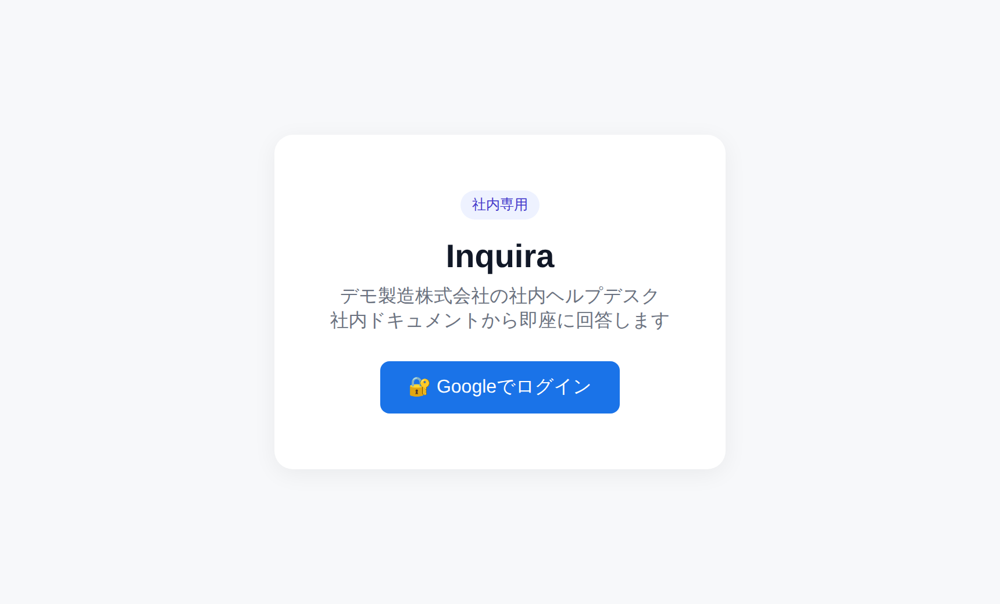
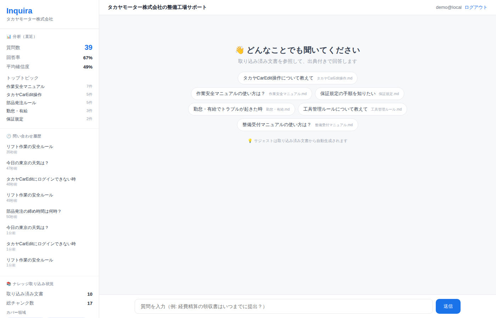
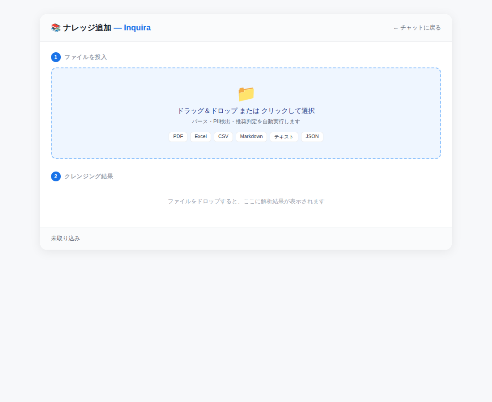
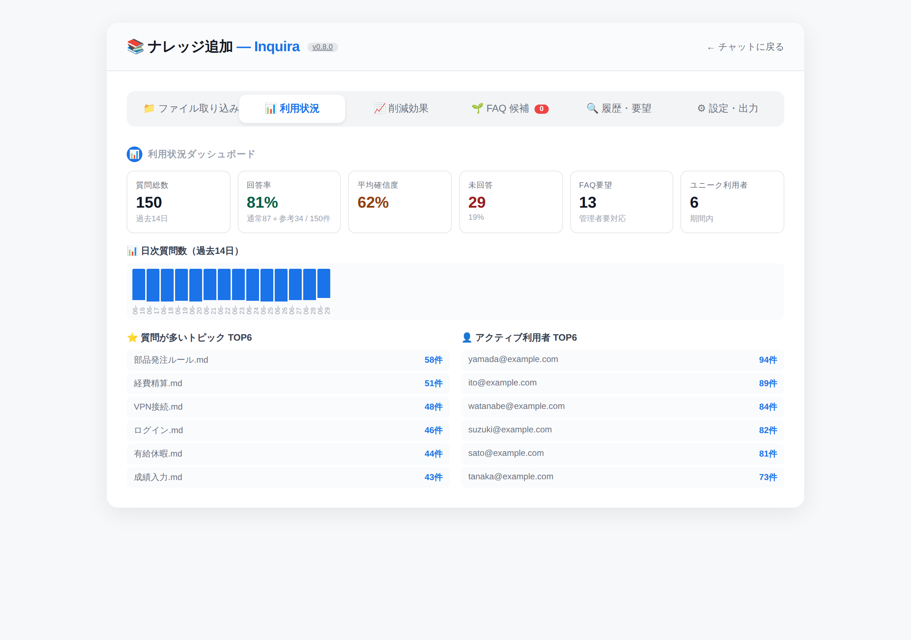
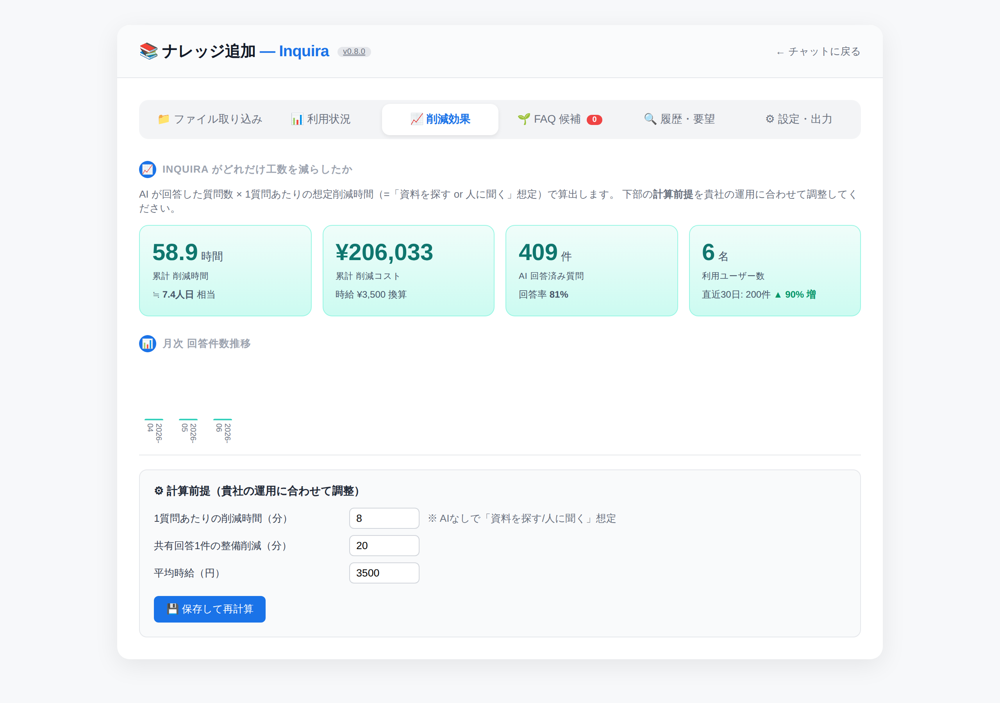
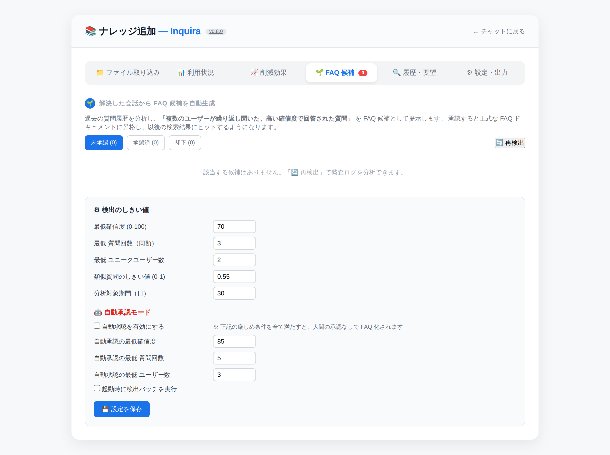
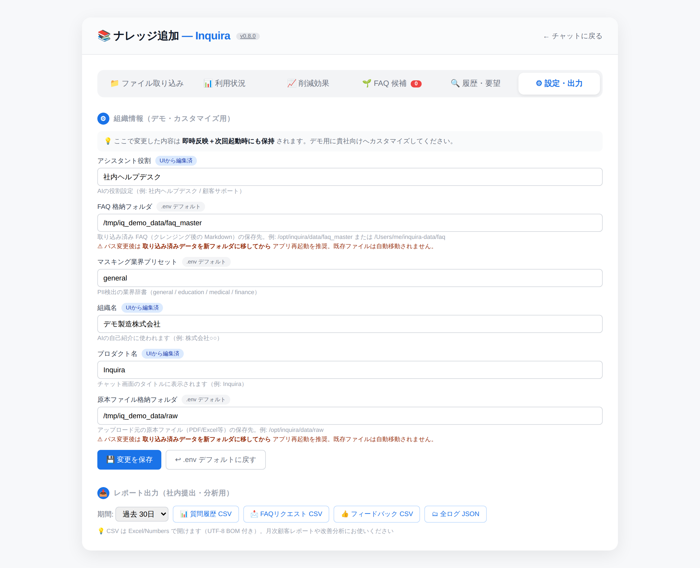

Inquira 機能ガイド
本ガイドは、全機能の使い方とコツをメニューごとに詳しく解説します。
目次
- Inquira とは — 仕組みと特長
- 質問する（チャット画面） — 質問・回答・出典・確信度
- フィードバックと協力機能 — 👍👎 / FAQ追加リクエスト / 答えの共有
- 📁 ファイル取り込み — ナレッジ投入・PII マスキング・メンテナンス
- 📊 利用状況 — 統計ダッシュボード
- 📈 削減効果 — 工数・コストの可視化
- 🌱 FAQ 候補 — AI 自動検出と承認
- 🔍 履歴・要望 — 全質問検索・リクエスト管理
- ⚙ 設定・出力 — カスタマイズ・CSV エクスポート
- おすすめ運用サイクル
Inquira とは
Inquira（インクワイラ）は、社内のマニュアル・規程・過去 FAQ などを AI が読み取り、社員からの質問に自然な日本語で、根拠（出典）を添えて回答する社内ヘルプデスク向けプラットフォームです。
「覚えさせる」のではなく「参照する」
一般的な「AI に社内資料を学習させる」方式と異なり、Inquira は RAG（検索拡張生成） という仕組みを採用しています。質問が来るたびに社内ナレッジの中から関連箇所だけを検索し、その文章を根拠に AI が回答します。
- 常に最新 — ドキュメントを差し替えれば即座に回答も更新（再学習不要）
- 根拠が追える — 「どのファイルのどこを見て答えたか」が必ず示される
- 情報が外に出にくい — ナレッジ全体ではなく、質問に関連する一部だけを AI に渡す設計
質問する（チャット画面）
まずはログイン
社内に共有された URL を開くと、ログイン画面が表示されます。「🔐 Google でログイン」 を押し、会社の Google アカウントを選択してください。許可されたアカウントのみアクセスできます。

メイン画面
ログインすると、メイン画面が表示されます。画面下部の入力欄に質問を打ち込むだけで、AI が回答します。よく使われる質問はサジェストとして自動表示されます。

基本の流れ
質問を入力
画面下部の入力欄に、知りたいことを日本語で入力し Enter または「送信」。
数秒待つ
AI が社内ナレッジを検索 -> 関連箇所を根拠に回答を生成します。
回答と出典を確認
回答の下に「確信度」と「参照ドキュメント」が表示されます。

上手な聞き方のコツ
| コツ | 理由・例 |
|---|---|
| 短く具体的に | 「経費精算の締め切りは？」のように 1 文で。長文より高精度 |
| 普段の言葉で | 専門用語より、同僚に口頭で聞くような言い回しがヒットしやすい |
| 続けて聞ける | 前の回答を踏まえ「では、その場合は？」と追加質問できる |
| 言い換える | うまく答えが出ない時は、別の表現に変えると精度が上がる |
確信度の見方 — 不確かなら「答えない」
AI の「それっぽいが誤った回答」を防ぐため、回答の信頼度を 3 段階で色表示します。根拠が弱い時は無理に回答しません。

参照ドキュメント（出典）の見方
- 回答の下に 「📎 参照ドキュメント N件」 が表示される
- 各ファイル名の横の 関連度（0～1） が、その資料が回答にどれだけ寄与したかを示す
- ファイルをクリックすると、根拠になった該当箇所の全文を確認できる
左サイドバーの見方
| セクション | 内容 |
|---|---|
| 分析（直近） | 質問数・回答率・平均確信度・トップトピックのミニ統計 |
| 問い合わせ履歴 | 自分が過去にした質問。クリックで再表示 |
| ナレッジ取り込み状況 | 取り込み済み文書数・チャンク数・カバー領域タグ |
| ファイルを追加 | ナレッジ取り込み画面（後述）へのショートカット |
フィードバックと協力機能
回答品質を組織全体で育てるための機能群です。
役に立った / 改善が必要
各回答の下に 「👍 役に立った」「👎 改善が必要」 ボタンがあります。
| ボタン | 使う場面 | 効果 |
|---|---|---|
| 👍 役に立った | 回答が正しく役立った | 同種の質問で、その回答が優先されやすくなる |
| 👎 改善が必要 | 誤り・不十分 | 任意でコメント入力。管理者がナレッジ修正に活用 |
👎 の後は 「💬 もう一度質問する」 で、言い換えてその場で再質問もできます。
FAQ 追加リクエスト
欲しい情報が見つからなかった時に、管理者へナレッジ追加を依頼できます。
- 「該当なし」回答の下の 「FAQ追加リクエスト」 ボタンを押す
- 必要なら補足コメントを入力 -> 送信
- 管理者の 「🔍 履歴・要望」タブ に届く
自分で見つけた答えを共有
AI が答えられなかった質問を自分で解決できた時、その回答を他の人に共有できます。
- 該当質問の下の 「💬 自分で見つけた答えを共有」 ボタンを押す
- 見つけた回答を入力（空でも送信可 = 「自分も同じ質問を持っている」というシグナルになる）
- 共有された回答は 「💬 ユーザー提供」 タグ付きの参考情報として、すぐ他の人の検索にヒット
- 管理者が確認し、適切なら正式ナレッジに昇格
管理機能 — 画面上部の 6 タブ
ナレッジ管理・分析・設定を行う管理画面です。上部に 6 つのタブがあります。
| タブ | 役割 |
|---|---|
| 📁 ファイル取り込み | マニュアル等を Inquira に取り込む |
| 📊 利用状況 | 利用統計・回答率・トピック分析 |
| 📈 削減効果 | 工数・コスト削減の可視化 |
| 🌱 FAQ 候補 | AI が見つけた FAQ 候補の承認 |
| 🔍 履歴・要望 | 全質問検索・FAQ リクエスト管理 |
| ⚙ 設定・出力 | カスタマイズ・CSV 出力 |
📁 ファイル取り込み
社内マニュアル・規程・FAQ を Inquira に取り込み、AI が回答に使えるようにする画面です。3 ステップ構成。
ステップ 1 — ファイルを投入
- 枠内にドラッグ＆ドロップ、またはクリックして選択（複数可）
- 投入すると自動で「パース -> PII 検出 -> 推奨判定」が走る
対応ファイル形式（8 種）
PDF / Excel / PowerPoint / Word（由来テキスト）/ CSV / Markdown / テキスト（.txt）/ JSON

ステップ 2 — クレンジング結果（重要）
取り込み前に、ファイルごとに安全性を 3 段階で自動判定します。
| 判定 | 意味 | 操作 |
|---|---|---|
| ✅ 取り込み可 | 懸念事項なし | 「取り込む」または「スキップ」 |
| ⚠ 確認必要 | 個人情報・機密マーカーを検出 | 「マスクして取り込む」で黒塗り取り込み |
| 🔴 取り込み非推奨 | マイナンバー等、法的リスク高 | 原則「スキップ」（強制取り込みも可） |

ステップ 3 — 取り込み済み文書（メンテナンス）
- これまで取り込んだ文書の一覧を表示
- 規程改定時などは、古い文書を削除して新しいものに差し替え
取り込みの確定
画面下部の 「選択を確定して取り込む（Nチャンク）」 を押すと、検索インデックスに反映され、即座に回答に使われるようになります。
📊 利用状況（統計ダッシュボード）
「どれだけ使われ、どんな質問が来ているか」を可視化し、ナレッジ改善の判断材料にします。
確認できる指標
| 指標 | 意味・活用 |
|---|---|
| 質問数の推移 | 日別・週別グラフ。導入直後の浸透度や繁忙期を把握 |
| 回答率 | AI が答えられた質問の割合。ナレッジ充実度の総合指標 |
| 平均確信度 | 回答の確からしさの平均。低い時はナレッジ拡充の余地 |
| トップトピック | よく質問されるテーマ上位。注力すべき領域がわかる |
| ユニークユーザー数 | 実際に使っている人数 |
| 回答できなかった質問 | ナレッジに不足している領域の一覧 -> 追加の優先順位に |

📈 削減効果（工数・コストの可視化）
AI が答えた件数から、削減できた時間と人件費を自動試算します。経営報告・予算申請にそのまま使えます。
（人日換算も表示）
（時給換算）
＋前月比
計算前提（調整可能）
画面下部で、自社の運用に合わせて以下を設定できます。
| 項目 | 説明 | 初期値 |
|---|---|---|
| 1 質問あたり削減時間 | 「資料を探す/人に聞く」の想定時間（分） | 8 分 |
| 共有回答あたり削減時間 | ユーザー提供回答 1 件の価値（分） | 20 分 |
| 時給単価 | 人件費換算の時給（円） | ¥3,500 |

🌱 FAQ 候補（AI 自動検出）
過去の質問履歴を AI が分析し、「複数のユーザーが繰り返し聞いた、高確信度で回答された質問」を FAQ 候補として提示します。
運用フロー
候補を確認
未承認候補があるとタブに赤いバッジ（件数）が付きます。
承認 / 編集 / 却下
承認＝そのまま FAQ 化、編集して承認＝回答文を整えてから FAQ 化、却下＝候補から除外。
即反映
承認した FAQ はすぐ検索インデックスに入り、次の質問から使われます。
検出のしきい値（設定可能）
| 項目 | 説明 |
|---|---|
| 最小確信度 | この確信度以上で回答された質問を候補にする |
| 最小質問回数 | 何回以上聞かれたら候補にするか |
| 最小ユニークユーザー数 | 何人以上が聞いたら候補にするか（特定個人の偏りを除外） |
| 類似度しきい値 | どれだけ似た質問をまとめるか（0～1） |
自動承認モード
信頼度が特に高い候補を、人のレビュー無しで自動的にナレッジ化する設定も可能です。自動承認の ON/OFF と、その専用しきい値（確信度・回数・人数）を個別指定できます。

🔍 履歴・要望
質問履歴を検索
社員から実際に投げられた全質問を検索・閲覧できます。
| 絞り込み | 選択肢 |
|---|---|
| 本文検索 | 質問テキストの部分一致 |
| 回答状態 | すべて / 回答済 / 未回答 / 参考情報 |
| 期間 | 過去 7 日 / 30 日 / 90 日 |
各履歴では、質問日時・質問者・質問内容・回答内容・参照ドキュメント・👍👎評価まで確認できます。
FAQ 追加リクエスト
社員から送られた「FAQ追加リクエスト」の一覧です。1 件ずつ確認し、必要なナレッジを 📁 タブから追加して対応します。
⚙ 設定・出力
組織情報のカスタマイズ
変更は即時反映＋次回起動時も保持されます。
| 項目 | 説明・例 |
|---|---|
| プロダクト名 | チャット画面のタイトル表示（例: Inquira） |
| 組織名 | AI の自己紹介に使用（例: 株式会社NN） |
| アシスタント役割 | AI の役割設定（例: 社内ヘルプデスク / 顧客サポート） |
| マスキング業界プリセット | PII 検出辞書（general / education / medical / finance） |
| FAQ 格納フォルダ | 取り込み済みナレッジの保存先 |
| 原本ファイル格納フォルダ | アップロード元ファイルの保存先 |

レポート出力（CSV / JSON）
月次の社内提出・分析用にデータを出力できます。期間（7日/30日/90日/1年）を選んで:
| ボタン | 内容 |
|---|---|
| 📊 質問履歴 CSV | 全質問のログ |
| 📩 FAQリクエスト CSV | 追加依頼の一覧 |
| 👍 フィードバック CSV | 👍👎 評価とコメント |
| 🗂 全ログ JSON | すべてのイベントログ（詳細分析用） |
おすすめ運用サイクル
📅 毎週 15分
- 🌱 FAQ 候補をレビュー（承認/編集/却下）
- 🔍 👎 が付いた回答を確認・修正
📅 毎月 30分
- 📊 利用状況で傾向を把握
- 📈 削減効果を経営層に共有
- 📁 新しいマニュアルを追加
📅 随時
- 規程改定時は古い文書を差し替え
- FAQ リクエストに対応
- 新メンバーに利用案内